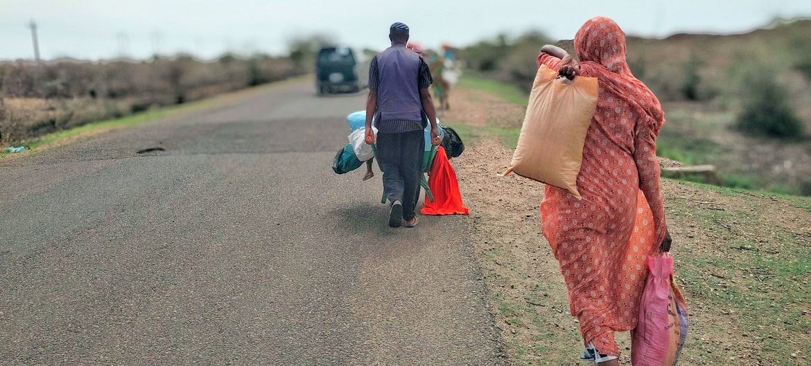
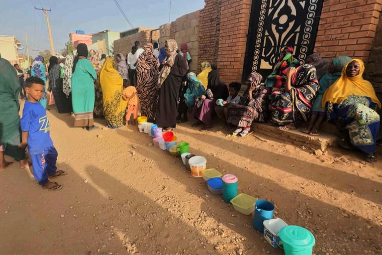

THIS IS SUDAN
95%
Are unable to afford enough meals per day
8.6M
Are displaced due to insufficient housing and plundering
150K
Have died in the past year due to the war
What's happening now?

Tens of thousands displaced as fighting intensifies in southeast Sudan
The article reports on the escalating humanitarian crisis in Sennar state, Sudan, where people face multiple protection risks amid widespread looting by alleged Rapid Support Forces (RSF) members. Homes, vehicles, and shops have been targeted, exacerbating insecurity and depriving civilians of essential resources. The conflict between the Sudanese Armed Forces (SAF) and RSF, which began in April last year, has led to significant displacement.

More than 136,000 displaced by spread of war in southeast Sudan, UN says
Over 136,000 people have fled Sudan's southeastern Sennar state due to attacks by the paramilitary Rapid Support Forces (RSF), adding to the nearly 10 million displaced by the 15-month-long war between the RSF and the regular army.